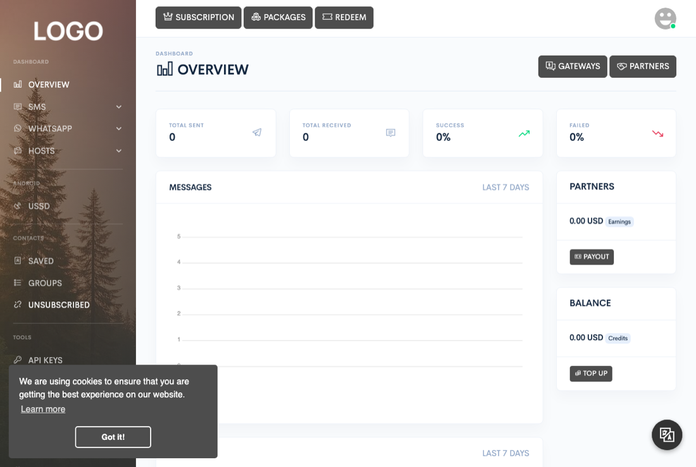

Getting started
Overview
Zender turns your server into a messaging business: a single platform for sending and receiving SMS and WhatsApp messages, running Android phones as SMS gateways, and — if your plan includes it — reselling all of that to your own customers. It runs entirely on infrastructure you control; there is no hosted service you depend on to keep it working.

What you can do with it
Once it's installed, everything happens from one dashboard. You can:
- Send and receive SMS through Android phones acting as gateways, or through third-party SMS providers.
- Send and receive WhatsApp messages, including media, documents, and group messages.
- Import and organize contacts, run bulk campaigns, and schedule messages ahead of time.
- Automate replies and actions with keyword triggers, webhooks, and a visual workflow builder.
- If you're running Zender as a business, sell subscription packages to your users and let partners earn credits by sharing their own devices.
The three ways messages get sent
Zender sends and receives messages through three kinds of channel, which you can use independently or together depending on what your subscription enables:
- Android devices acting as SMS gateways — a phone running the Zender Android app registers with your installation and sends and receives SMS through its own SIM card. Devices are managed under Hosts → Android.
- WhatsApp, sent and received through a companion WhatsApp server that runs as its own process alongside Zender. Zender talks to it over the network — it does not send WhatsApp messages by itself. Connections are managed under Hosts → WhatsApp.
- Third-party SMS gateways — HTTP-based SMS providers your administrator installs one at a time. None are installed out of the box, so a fresh install won't show any gateway options until at least one has been added under Admin → Gateways.
How the pieces fit together
At minimum you need: Zender itself, served by your web server, and a MySQL or MariaDB database. If you use WhatsApp, you also need the WhatsApp server process running alongside it. Android gateways and third-party SMS providers connect straight to Zender over HTTP, so an SMS-only setup doesn't need anything extra running.
Everything a signed-in user does is reachable from the dashboard sidebar. Here's what each area is for:
| Area | What it does |
|---|---|
| SMS | Queue, sent, received, campaigns, scheduled messages, and (for partner accounts) transactions — everything related to sending and tracking SMS. |
| The same message lifecycle as SMS (queue, sent, received, campaigns, scheduled) plus WhatsApp-specific groups. | |
| Contacts | Saved contacts, contact groups, and the unsubscribed list used to suppress future sends to opted-out recipients. |
| Tools | API keys, webhooks, automated actions, message templates, the Flow builder, and the event logger. |
| Hosts | Registering and managing the Android devices and the WhatsApp server connection(s) that actually deliver messages. |
| AI | AI provider keys and AI plugin configuration used by automated replies and actions. |
| Flow | The visual automation workflow builder (under Tools) for building multi-step message sequences and triggers. |
Where your data lives
Everything persistent — users, messages, contacts, campaigns, flows, and settings — lives in your own MySQL or MariaDB database. Local configuration, including your database credentials and an internal security token, is stored in a configuration file the installer writes for you; see Configuration for what's in it. Uploaded files, generated assets, and caches live on the server's own filesystem. Nothing is sent to or stored by any third party unless you configure an integration — a payment gateway or an AI provider, for example — to do so.